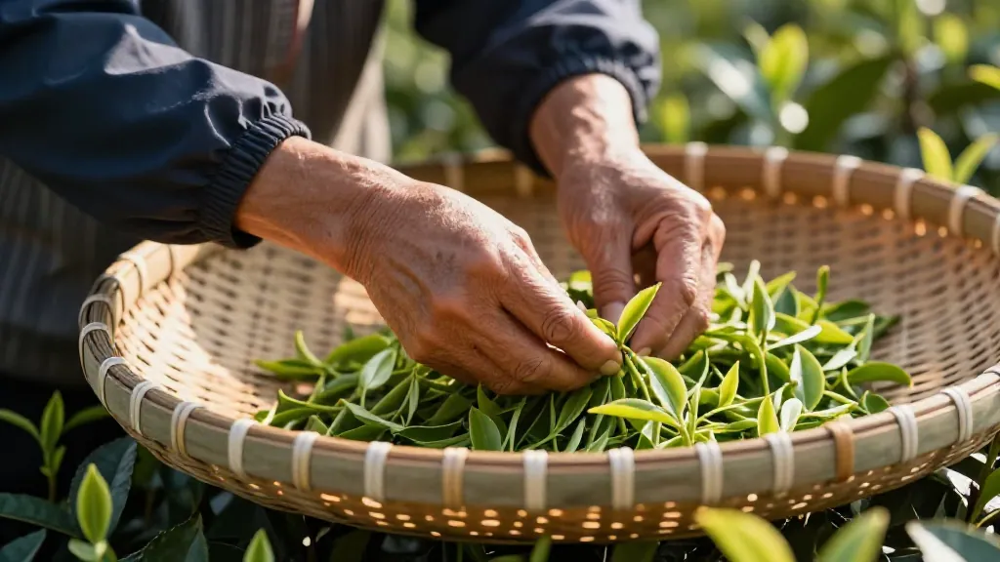

🌿 这是阿凤姐听她师父讲过的故事，发生在1997年香港回归那年。那年台风过境，暴雨倾盆，却也揭开了一段尘封十九年的茶案。
📌 第一幕：台风夜劫案
1978年，阿凤茶贡品级茶饼在香港荣记茶行展出。这批茶饼有个特殊标记——「凤尾暗纹」，真品烧灼时会散发蜜香。
展出当夜，台风"维克托"席卷香港。荣记茶行后窗被撬，三饼贡品级阿凤茶不翼而飞。现场只留下一片越南红河的湿泥，和一个被雨水泡烂的茶饼碎片。
"贼人仓皇中撕破茶饼，残留的半片糯米纸暴露了伪造工艺。真品的糯米纸遇水会化，仿品的却像塑料一样韧。"——老掌柜回忆
📌 第二幕：老茶探的追查
方世明，退休刑警，六十岁，鼻癌晚期。医生让他化疗，他拒绝了："化疗会毁了我的嗅觉。"
他凭嗅觉辨茶，追查这批失窃茶饼整整十一年。
关键发现一：假茶的破绽
1997年市面上流出一批"阿凤茶"，方世明用80℃热水一冲，茶汤表面浮起一层桂林腐竹色素的油光。真阿凤茶只会释放琥珀茶晕，清澈透亮。
关键发现二：暴雨的真相
坊间传说这批茶被暴雨泡过，反而陈香独特。方世明查到，1997年台风夜，真品茶饼其实被藏进荣记茶行的消防水箱。所谓"水渍"，是消防栓残留的锈水和雨水混合的痕迹。
📌 第三幕：天台对决
2008年深秋，九龙城寨天台。
方世明约见了茶枭——当年荣记茶行的少东家。十九年过去，少东家已成了香港地下茶市的头号人物。
方世明摆开两只白瓷杯，各投一撮茶叶，注入80℃热水。
"真阿凤茶，暴雨冲不走兰花香。"方世明将其中一杯推过去，"你闻闻，你手上的'阿凤茶'，有兰花香吗？"
茶枭端起杯子，脸色骤变。他的仿品，只有闷湿的霉味。
茶枭颓然坐下，从怀中取出一只锡罐："这是当年那批茶，藏了十九年……你拿走吧。"
📌 第四幕：湿仓传奇
方世明将锡罐带回惠州，交给了阿凤姐的师父——当时已九十高龄的老茶人。
老茶人打开锡罐，一股兰花香混着陈年蜜韵扑面而来。那批被藏进消防水箱的茶饼，因祸得福——水箱恒温恒湿，竟成了最理想的"湿仓"环境。
检测发现，这批"湿仓茶"的黄酮含量超常，抗氧化物质比正常陈茶高出三倍。后来在香港苏富比拍卖，一饼拍出三十八万港币。
📌 尾声：茶如人生
方世明没等到拍卖那天。他去世后，骨灰撒进了凤凰山的茶园。
阿凤姐每次讲起这个故事，都会泡一壶陈年的蜜兰香，对着山风敬一杯：
"茶如人生，苦尽回甘。暴雨冲不走的，才是真香。"